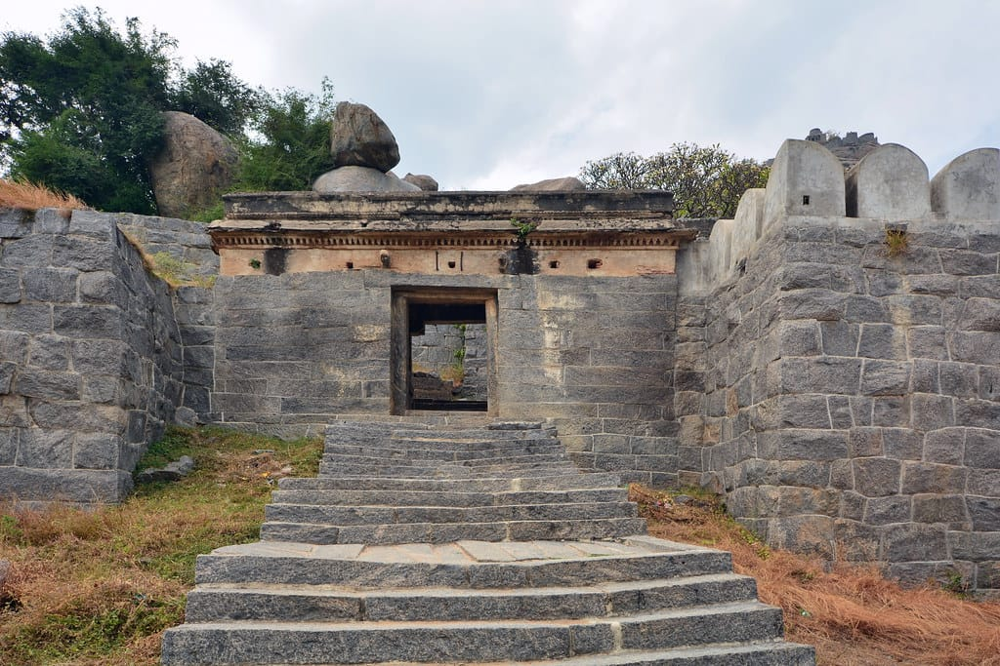
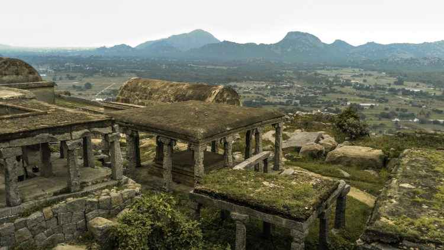
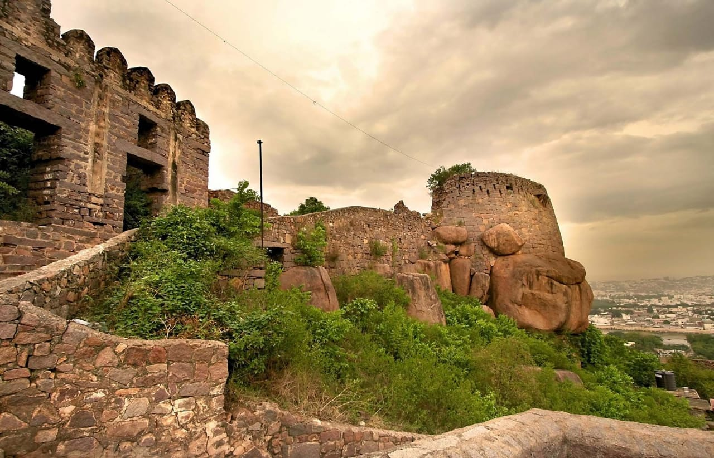
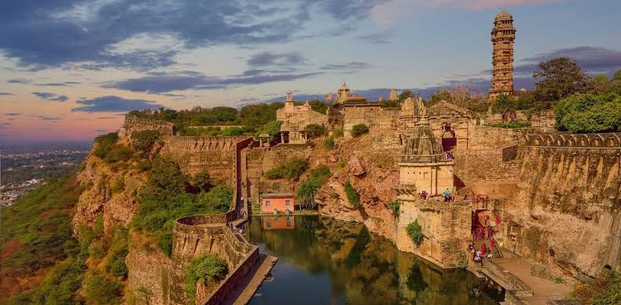
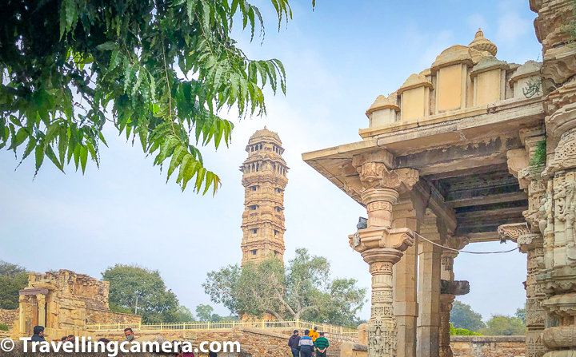
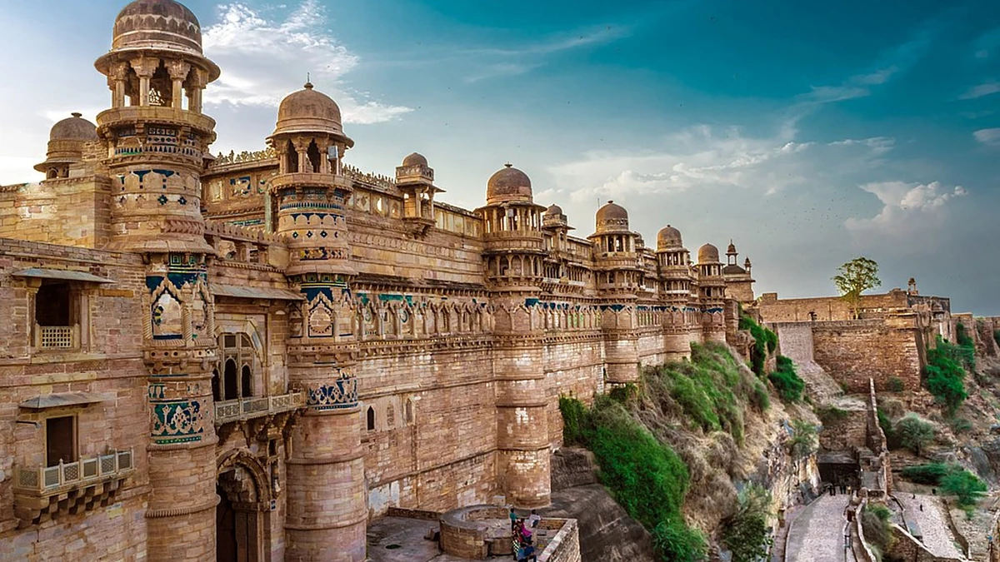
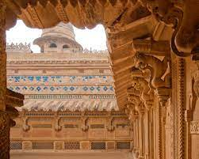
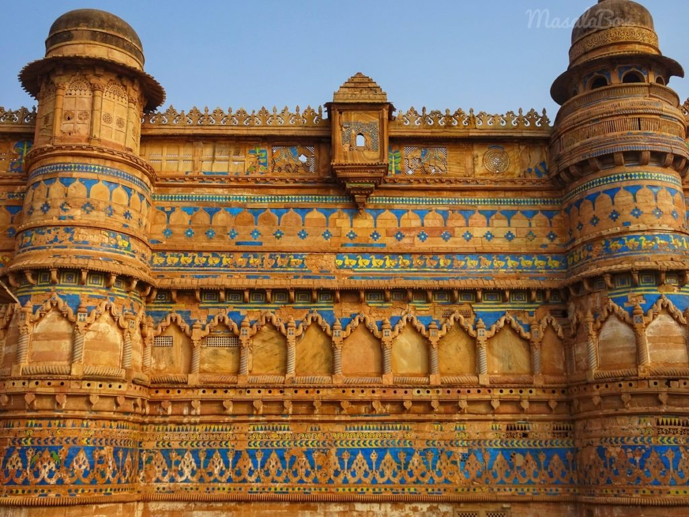

"History is about who we are and why we are the way we are"
A discussion about the forts in India is an ambitious endeavour.
The history of forts in India through the medieval era is a harmonious continuation of its past.
Several forts built in the ancient times were fought over, captured, recaptured, destroyed and occupied over the centuries.
Architectural changes reflected the changing atmosphere of the country.
The forts were constructed in order to influence the people,showcase the wealth,power and glory of a king.
Most of the forts were actually castles.Most of the forts were constructed between 1300-1800A.D.
Forts today are seen as the tangible reminders of the military might of the kingdoms of the past.
The forts of the subcontinent as well as those that travelled from far off lands along with conquerers and adventurers.
This section aims to discuss about the chronicles of some of the important forts in India.
Senchi Fort or Gingee for is a historical fort located in the south Indian state of Tamilnadu.
This fort is located near Puducherry in Villupuram district.
The Gingee fort is spread on three hillocks,Krishnagiri to the north,Rajagiri to the west, and Chandrayandurg to the south east.
The three hills together constitute the fort complex, each having a seperate and self contained citadel.
Seeing the construction of this fort,Chathrapathi Shivaji called this fort the most"Impregnable Fort" of the country.
History of Senchi fort

This fort was built by the Chola dynasties in the 9th century A.D.The fort was built at the height of about 240 meters,a grass protected area 80ft wide.
This fort was modified by Vijayanagara empire during the 13th century. This fort was later captured by Marathas and they lasted there for 22 years.
Gingee fort was then captured by Mughals and later by Nawabs.In 1750 CE,the fort was taken over by the French from the Nawabs.
In 1761,this fort came under the control of British and in 1780-1799 CE under the control of Tipu Sultan.
At the end of Fourth Anglo Mysore war,this fort was been recaptured by the British. History of senchifort
Architecture of Senchi Fort

Being surrounded by high walls on all sides,it was strategically planned so as to make the enemies think twice before they attacked.
Strongly guarded by a triple gate beyond the summit of the Rajagiri could not have been easily attacked by any enemies.
Today,however,the summit can be reached after a two hour trek; strenous, but well worth the effort.
Golconda Fort
Golconda Fort is located on the outskirts of Hyderabad,Telangana, is a historically significant fortress built in 12th century.
The Kakatiya dynasty built the Golconda Fort to defend the western part of their kingdom.The fort was built on top of a granite hill.
It is considered as one of India's most outstanding citadels.
It was originally known as Mankal as it was originally a mud fort under the reign of Rajah of Warangal.
History and Architecture

The Golconda fort which was initially a mud fort was been fortified between 14th and 17th centuries by the Bahmini Sultans and the Qutub Sahi dynasty. Then the fort was captured by Aurangazeeb and was intentionally left in ruins by his armies.
The fort gains an impressive place among the architectural marvels and heritage structures of India.
Golconda Fort has eight gates out of which the main gate is Fateh Darwaza or the Victory Gate
This gate was built to commemorate the victorious march of Mughal Emperor Aurangazeb.
The gate has steel spikes to protect it from elephants.The length of the gate is 25ft and width is 13ft.
Eastern gate is the only gate through which tourists can enter the fort.It is the biggest entrance of the fort.
History
Chittorgarh Fort

Chittorgarh fort is one of the largest forts in India which was the capital of Rajasthan.
This fort was also popularly known as Water Fort and is home to 22 water bodies andpalaces,towers and temples built by Rajput rulers.
The fort is spread in an area of around 700 acres.Currently,this fort has become UNESCO World Heritage site.
History and Architecture

According to legends,the fort was built by Chitrangada Maurya in 7th century AD.Later,Bappa Rawal,the founder of Mewar dynasty,made Chittogarh as his capital.
This fort was been attacked three times: by Ala-ud-din Khilji in 1303, by the sultan of Gujarat in 1535 and by Mughals.
This fort is spread across an area of 700 acres,the circumference of the fort covers an rea of 13 kilometers.There are 7 massive gates and the fort has 65 structures including temples,palaces,memorials and water bodies.
There are two prominent towers within the fort namely Vijay Stamba and Kirti Stamba. The architectural design of the palace was a nice blend of Rajput and Mughal architecture.
history
Gwalior fort

Gwalior fort is situated in Gwalior fort, Madhya Pradesh.
Gwalior fort was built in 8th century and it consists of many palaces,temples and other structures.
The fort was built on a steep sandstone. Many rulers of different periods captured the fort and has seen many battles related to independence from the British.
History and Architecture

This fort was deemed to be built in 3 CE by a local king Suraj Sen. The fort was named after a saint namedGwalipa.
Later in the 9th century,Gurjara-Prathiharas captured the fort.In 1398,Tomars captured the fort in 1398.
Then this fort was attacked by Ibrahim Lodi and he captured the fort.Then the fort was captured by the Marathas and were many recurrent shifts between Marathas and Britishers regarding this fort.
This fort saw the great rebellion of 1857.info
India gained Independence in 1947,the Scindias continues ruling the city.

The palaces here include the Man Mandir palace,the Gurjari Mahal,the Shah Jahan Mahal and the Karan Mahal.
The fort lies on an area of 1.1 square miles.It has 2 entrance gates:The Elephant Gate,the main entrance gate and
The Badalgarh gate on the south-west side.
The beautiful carvings of the fort dominates the complete city of Gwalior.